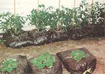

COUNTRY LORE
Make delicious jelly & wine from "weeds."
Here's a tip for practical weed control. Use your dandelions to make jelly and wine; I'm enclosing recipes for both. The jelly has won blue ribbons at our local fair.
1 quart dasndelion flowers, well packed (remove all stem and calyx) 1 quart water 1 1 3/4 -ounce package pectin (MCP) 2 tablespoons lemon juice 4 1/2 cups sugar 3-4 drops yellow food coloring (optional)
Boil flowers in water for 3 minutes; strain through muslin for 3 cups juice. Add pectin and lemon juice, and stir all until pectin is completely dissolved (a few minutes). Bring to a rolling boil; add sugar and food coloring. Bring back to fast, furious, climb-up-the-side-of-the-pot boil, and maintain for 2 minutes. Remove from heat, quickly skim, and pour into waiting jars. Seal according to standard canning procedures. Makes about 4 half-pint jars.
1 gallon dandelion flowers (minus stems and calyx) 1 gallon boiling water 3 pounds white sugar 3 oranges, cut in small pieces 3 lemons, cut in small pieces 1 ounce cake yeast stone crock or huge glass container, scalded Put flowers in crock, pour boiling water over them, and let stand for three days, stirring a couple of times a day. Strain juice through muslin. Re-scald crock. Pour juice and rest of ingredients back into crock. Let stand for three weeks, covered, to ferment; stir once a day. Strain through muslin again, then bottle. Either cork bottles, dipping corked tops in melted wax to seal, or use a bottle capper. Makes about 12 12-ounce bottles per batch, and the recipe can be doubled and doubled again, depending on the strength of your back for dandelion picking.
I'm also a big canner, and I have some helpful hints for your readers who also enjoy canning:
1. When making apple butter, cook the pulp down in a heavy pan in a 325°350°F oven, stirring occasionally. (This means no constant stirring for hours on a stove burner, no scorching, no heavy-duty pot scrubbing afterward.)
2. Avoid mayonnaise jars and the like they're too flimsy. If one cracks (and they do, all too often), you've lost time, labor, and product. Look for real canning jars at garage sales and thrift stores-check rims for nicks and surfaces for hairline cracks before purchasing.
3. Ever have the liquid boil out of a jar of food during the water-bath process? The newest recommendation from my nearby County Extension Office is to first put jars on racks and lower into warm water in the water-bath. Then bring the temperature to 190°F, and water-bath for the recommended time.
Our County Extension Office offers classes by certified master food preservers for people who want to put up their own produce (canning, freezing, curing, etc.). The classes are inexpensive, take a couple of hours, and teach you to "put up" preserved foods safely! No matter how much you've canned, a quick brush-up class is in valuable. Check the County Extension Office in your area.
-Vivian Herron
Washington, CA
I am enclosing some photographs of my tomato effort last year. I thought you might be interested.
I live in Texas near my retired parents, and usually bust up the garden and plant our tomatoes in the ground like always, then stake them as they grow. This year I decided to try something different. Tired of fighting the nut grass and other weeds, I came up with the idea of using trash bags as containers. The idea behind it all was to virtually eliminate the work involved.
I filled each bag with leaves (whole) and found a nice sunny spot up against the house. Before putting the bags on the ground, I loosened the ground at the spots where the bags would be placed. Then, I split the undersides of the bags in an X pattern and set them in their spots.
I used duct tape to make a square on the top of each bag. I cut a slit in the center of the square to allow hand-entry into the leaves. Next, I used permeable nursery sacks (used to cover early plants for protection), filling each one with a 3-to1 concoction of sheep manure and organic humus. Then I placed the sacks inside the bags of leaves, and planted a tomato sprout in each one.
Nearby, in a trash can, I filled a large plastic trash bag with water, about one-third of a sack of sheep manure, and a little humus. I stirred it up and put a lid on it. This causes a cooking process during the day in the sun, and it ferments. I used this "soup" on the tomatoes daily. I did very well with this idea (you can see the results for yourself), and I intend to expand on it this year. I picked tomatoes into November, and best of all-there's no work!
-Terry Lancaster
Teague, TX
Ever since California was in a drought condition a few years ago, it has been my wife's habit to keep a plastic bucket of water near our sink. It's purpose was to accept all rinse water after the dishes were done, to use for the flower boxes that decorate the west side of our house.
Much to our surprise, when the early spring came, volunteer tomatoes sprang up in those flower boxes, and are as delicious and plentiful as their forebears from our regular garden. The hot western sun is just what these tomatoes ordered. Who says that you can't grow a full plant in just 4 inches of soil? Right now we're waiting for the watermelons to sprout.
-John Higginsons
Long Beach, CA
Out here in our semi-rural area, an annual late fall task is to line the driveway with reflectors, those shiny plastic circles atop long metal stakes. Since the snowplow routinely destroys a few every winter, every fall requires an outlay of cash for replacements. To squeeze every bit of use out of these reflectors, they don't just gather dust in the garage once spring comes they go right into the garden!
Driveway reflectors can be used anywhere you'd use stakes, such as for row markers. Reflectors are also great supports for vertically grown vining plants, like pole beans. Use them singly or lashed together into a tepee.
And the year our garden was overrun by sprawling cantaloupe plants, reflectors increased the efficiency of hand-watering. How? By planting a reflector at the same time you plant the seed of a soon-to-be sprawling plant, you'll easily locate the plant's base for watering once it's covered in a sea of green leaves and fruit.
And for very young gardeners, reflectors are an easy visual aid for defining whatever boundaries the parent wants the child to see. Last summer, our 3-year-olds mini plot within the family garden had reflectors at its corners. The reflectors are so tall (compared to a preschooler) that our son found his garden by himself every time. It made gardening easier and more independent for him, and meant fewer interruptions for the rest of us. So this year, don't put those driveway reflectors away just because the snow's melted.
-Janet Cass
North Oaks, MN
Help! My hens and rooster are destroying my raised flower beds. They scratch and dig for bugs, then have the nerve to lay on the dirt to sun themselves. Is there anything I can put in my gardens to stop my foraging fowl without damaging my plants? Any reader suggestions would be very appreciated!
-Wendy L. Moore
Carmel, ME
To bleach old, yellowed newspaper clippings, dissolve one tablet or 2 tablespoons of liquid milk of magnesia in I quart of club soda; mix well. (If using the tablet, be sure it dissolves completely.) Chill the solution for eight hours in the refrigerator. Next, pour the solution in a shallow pan. Place the newspaper clipping in the pan, and let it soak for an hour. Remove clipping; place between paper towels or other absorbent material, being careful not to tear it. Pat the clipping as dry as possible. Place on a flat surface to dry completely. You can soak several clippings at a time, but be sure they don't overlap in the shallow pan. If tightly capped, the solution can be saved and stored for one week. Repeat in SO years!
-Karen Ann Bland
Gove, KS
Send your tips to "Country Lore," Mother Earth News, P.O. Box 129, Arden, NC 28704, or E-mail us at MEarthNews@aol.com . We'll be glad to send you a T-shirt, but please include your address, phone number, and a photo!
|
|
 |
|